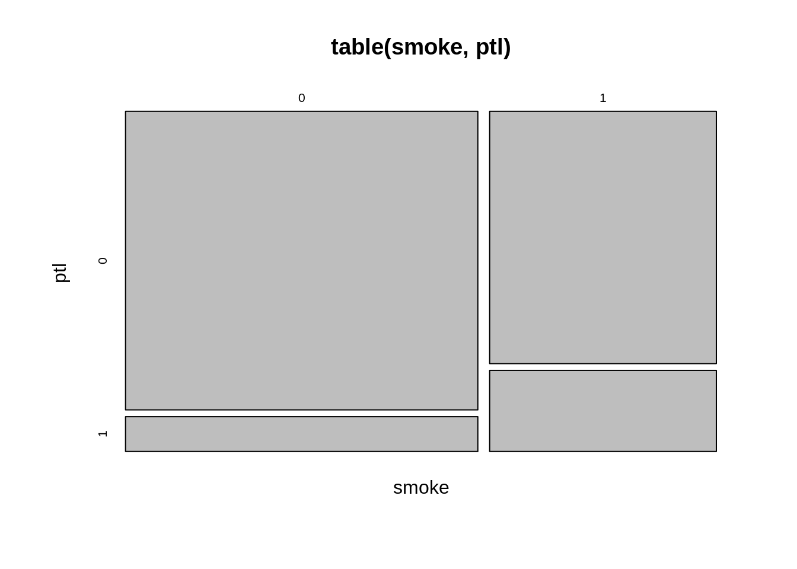

library("tidyverse")
library("dplyr")
library("equatiomatic")
library("ggplot2")Practical - Logistic regression in R
Load the data and inspect
chd <- data.frame(read_csv('https://raw.githubusercontent.com/amayomode/Heart-Disease-Risk-Prediction/master/Heart%20Disease%20Prediction/data/framingham.csv'))
#binning age variable
chd$AgeCat <- as.factor(cut(chd$age, breaks=8))
summary(chd) male age education currentSmoker
Min. :0.0000 Min. :32.00 Min. :1.000 Min. :0.0000
1st Qu.:0.0000 1st Qu.:42.00 1st Qu.:1.000 1st Qu.:0.0000
Median :0.0000 Median :49.00 Median :2.000 Median :0.0000
Mean :0.4292 Mean :49.58 Mean :1.979 Mean :0.4941
3rd Qu.:1.0000 3rd Qu.:56.00 3rd Qu.:3.000 3rd Qu.:1.0000
Max. :1.0000 Max. :70.00 Max. :4.000 Max. :1.0000
NA's :105
cigsPerDay BPMeds prevalentStroke prevalentHyp
Min. : 0.000 Min. :0.00000 Min. :0.000000 Min. :0.0000
1st Qu.: 0.000 1st Qu.:0.00000 1st Qu.:0.000000 1st Qu.:0.0000
Median : 0.000 Median :0.00000 Median :0.000000 Median :0.0000
Mean : 9.006 Mean :0.02962 Mean :0.005896 Mean :0.3106
3rd Qu.:20.000 3rd Qu.:0.00000 3rd Qu.:0.000000 3rd Qu.:1.0000
Max. :70.000 Max. :1.00000 Max. :1.000000 Max. :1.0000
NA's :29 NA's :53
diabetes totChol sysBP diaBP
Min. :0.00000 Min. :107.0 Min. : 83.5 Min. : 48.0
1st Qu.:0.00000 1st Qu.:206.0 1st Qu.:117.0 1st Qu.: 75.0
Median :0.00000 Median :234.0 Median :128.0 Median : 82.0
Mean :0.02571 Mean :236.7 Mean :132.4 Mean : 82.9
3rd Qu.:0.00000 3rd Qu.:263.0 3rd Qu.:144.0 3rd Qu.: 90.0
Max. :1.00000 Max. :696.0 Max. :295.0 Max. :142.5
NA's :50
BMI heartRate glucose TenYearCHD
Min. :15.54 Min. : 44.00 Min. : 40.00 Min. :0.0000
1st Qu.:23.07 1st Qu.: 68.00 1st Qu.: 71.00 1st Qu.:0.0000
Median :25.40 Median : 75.00 Median : 78.00 Median :0.0000
Mean :25.80 Mean : 75.88 Mean : 81.96 Mean :0.1519
3rd Qu.:28.04 3rd Qu.: 83.00 3rd Qu.: 87.00 3rd Qu.:0.0000
Max. :56.80 Max. :143.00 Max. :394.00 Max. :1.0000
NA's :19 NA's :1 NA's :388
AgeCat
(41.5,46.2]:849
(36.8,41.5]:772
(46.2,51] :732
(55.8,60.5]:593
(51,55.8] :565
(60.5,65.2]:469
(Other) :260 attach(chd)Plot age vs. target
pp <- ggplot(chd, aes(x = age, y = TenYearCHD)) +
geom_point()
ppmean_age_healthy <- mean(age[TenYearCHD==0])
mean_age_chd <- mean(age[TenYearCHD==1])Mean age healthy subjects: 48.76
Mean age diseased subjects: 54.15
interval_midpoint <- function(s){
midpoint <- substring(s, 2, str_length(s)-1) %>%
str_split(",") %>%
unlist() %>%
sapply(as.numeric) %>%
mean()
return (midpoint)
}
interval_ul <- function(s){
ul <- substring(s, 2, str_length(s)-1) %>%
str_split(",") %>%
unlist() %>%
sapply(as.numeric) %>%
as.vector()
return (ul[2])
}p_per_age <- chd %>%
group_by(AgeCat) %>%
summarise(p = mean(TenYearCHD))
p_per_age$midpoint <- sapply(p_per_age$AgeCat, interval_midpoint)
p_per_age$ul <- sapply(p_per_age$AgeCat, interval_ul) pp +
geom_point(data = p_per_age, aes(x=midpoint, y=p), color='red') +
geom_vline(data = p_per_age, aes(xintercept=ul))ggplot(p_per_age, aes(x=midpoint, y=p)) +
geom_point(color='red') +
geom_smooth(method = lm, se = FALSE)
ggplot(p_per_age, aes(x=midpoint, y=log(p/(1-p)))) +
geom_point(color='red') +
geom_smooth(method = lm, se = FALSE)Model with age as continous variable
Fit and model summary
model <- glm(TenYearCHD ~ age, data=chd, family = 'binomial')
summary(model)
Call:
glm(formula = TenYearCHD ~ age, family = "binomial", data = chd)
Deviance Residuals:
Min 1Q Median 3Q Max
-1.0386 -0.6261 -0.4580 -0.3695 2.4493
Coefficients:
Estimate Std. Error z value Pr(>|z|)
(Intercept) -5.561090 0.283746 -19.60 <2e-16 ***
age 0.074650 0.005265 14.18 <2e-16 ***
---
Signif. codes: 0 '***' 0.001 '**' 0.01 '*' 0.05 '.' 0.1 ' ' 1
(Dispersion parameter for binomial family taken to be 1)
Null deviance: 3612.2 on 4239 degrees of freedom
Residual deviance: 3396.6 on 4238 degrees of freedom
AIC: 3400.6
Number of Fisher Scoring iterations: 5Predicted outcome by age
pred <- predict.glm(model, type=c('response'))
sm_pred <- as.data.frame(spline(chd$age, pred))Visualisation
pp +
geom_point(data = p_per_age, aes(x=midpoint, y=p), color='red') +
geom_line(data = sm_pred, aes(x=x, y=y)) +
ggtitle('Model fitted values of P(Y=1|X)')
ggplot(p_per_age, aes(x=midpoint, y=log(p/(1-p)))) +
geom_point(color='red') +
geom_line(data = fortify(model), aes(x = age, y = .fitted)) +
ggtitle('Model fitted values of the link function')Model equation, linear generalization
\(Y\): binary outcome, coded as \(0/1\) (e.g. diseased, non-diseased)
\(X\): explanatory variable
\(\hat p = P(Y=1 | X)\) cannot be modeled with a linear function of the form \(\hat p = b_0+b_1X\), as it is not appropiately bounded in \(\left[0,1\right]\). One suitable function to model \(\hat p\) is :
\[\hat p = \frac{e^{b_0+b_1X}}{1+e^{b_0+b_1X}}\]
From this equation follows, that :
\[\operatorname{Logit}\left(\hat p\right) =\ln \left(\frac{\hat p}{1-\hat p}\right) = b_0+b_1X\]
The \(log-odds\) of \(\hat p = P(Y=1|X)\) is a linear function of \(X\). From the odds of \(Y=1\), \(P(Y=1|X)\) can be calculated - \(\operatorname{Logit}\) is called link function in Logistic regression.
Interpretation of the model output
The model provides the following estimation:
\[\hat p = \frac{e^{-5.561 + 0.075 \times age}}{1+e^{-5.561 + 0.075 \times age}}\]
Example for a subject with \(age=32\):
\[P(Y=1 | X=32) = \frac{e^{-5.561 + 0.075 \times 32}}{1+e^{-5.561 + 0.075 \times 32}} = 0.04\]
Interpretation of model coefficients
General case
\[\ln \left(\frac{\hat p}{1-\hat p}\right) = b_0+b_1X\]
\(\ln \left(\frac{\hat p}{1-\hat p}\right)\): \(\text{log-odds of }Y=1\)
\(b_0\): log-odds of \(Y=1\) \(\forall X: X=0 / ref\)
\(b_1\): \(\Delta\) in log-odds wrt to \(\Delta X\)
Depending on the type of \(X\), \(e^b\) gives odds ratios
Quantitative \(X\)
\(b_1\): \(\Delta\) in log-odds for a one unit increase in \(X\)
\(e^b\) gives incremental inrease in \(OR\) with a one unit increase of \(X\)
Binary \(X\)
\(b_1\): \(\Delta\) in log-odds for \(X=1\) relative to \(X=0\)
\(e^{b_1} = OR_{Y=1, \frac{X=1}{X=0}}\)
Categorical X
\(X \in \{A, B, C\}\), \(b_A\) is absorbed into reference
\(b_B\): \(\Delta\) in log-odds for \(X = B\)
\(\vdots\)
\(e^{b_B} = OR_{Y=1, \frac{X=B}{X=A}}\)
Derivation of \(e^\beta = OR\)
Consider a one-unit increase in \(X\) \[\ln \left(\frac{\hat p}{1-\hat p}\right) = b_0+b_1X\]
\[ \begin{align} \ln OR &= \ln \left(\frac{\operatorname{Logit}(Y=1, X=a+1)}{\operatorname{Logit}(Y=1, X=a)}\right) \\ \ln OR &= \ln \left[\operatorname{Logit}(Y=1, X=a+1)\right] - \ln \left[\operatorname{Logit}(Y=1, X=a)\right] \\ &= \left[b_0+b_1\times (a+1)\right] - \left[b_0+b_1\times a \right] \\ \ln OR &= b_1 \\ OR &= e^{b_1} \end{align} \]
Multiple logistic regression
Model structure
\(Y\): binary outcome, coded as \(0/1\) (e.g. diseased, non-diseased)
\(X\): explanatory variables, vector
\(\beta\): coefficient vector
\(\beta_0\): intercept
As for simple logistic regression, \(\hat p = P(Y=1 | X_1, X_2, \ldots, X_i)\) cannot be modeled with a linear function of the form \(\hat p = \beta_0+X \beta\), as it is not appropiately bounded in \(\left[0,1\right]\). One suitable function to model \(\hat p\) is :
\[\hat p = \frac{e^{\beta+X\beta}}{1+e^{\beta_0+X\beta}}\]
From this equation follows, that :
\[\operatorname{Logit}\left(\hat p\right) =\ln \left(\frac{\hat p}{1-\hat p}\right) = \beta_0+X \beta\]
Case study - Low birthweight dataset
Data prep
lbw <- read_csv('https://raw.githubusercontent.com/SarthakDubey/CUDA-Logistic-Regression/master/lowbwt.csv') %>% subset(select = -c(ID))
names(lbw) <- sapply(names(lbw), str_to_lower)
# deriving lwd variable
lbw$lwd <- ifelse(lbw$lwt < 110, 1, 0)
# releveling ptl
lbw$ptl <- ifelse(lbw$ptl >= 1, 1, 0)for (varname in c('lwd', 'race', 'smoke', 'ht', 'ui', 'ptl')){
lbw[,varname] <- as.factor(unlist(lbw[,varname]))
}colnames(lbw) [1] "smoke" "low" "age" "lwt" "race" "ptl" "ht" "ui" "ftv"
[10] "bwt" "lwd" summary(lbw) smoke low age lwt race ptl
0:115 Min. :0.0000 Min. :14.00 Min. : 80.0 1:96 0:159
1: 74 1st Qu.:0.0000 1st Qu.:19.00 1st Qu.:110.0 2:26 1: 30
Median :0.0000 Median :23.00 Median :121.0 3:67
Mean :0.3122 Mean :23.24 Mean :129.8
3rd Qu.:1.0000 3rd Qu.:26.00 3rd Qu.:140.0
Max. :1.0000 Max. :45.00 Max. :250.0
ht ui ftv bwt lwd
0:177 0:161 Min. :0.0000 Min. : 709 0:147
1: 12 1: 28 1st Qu.:0.0000 1st Qu.:2414 1: 42
Median :0.0000 Median :2977
Mean :0.7937 Mean :2945
3rd Qu.:1.0000 3rd Qu.:3475
Max. :6.0000 Max. :4990 attach(lbw)Data exploration and toy model
table(low)low
0 1
130 59 prop.table(table(low))low
0 1
0.6878307 0.3121693 sake.of.discussion <- glm(low ~ smoke + age + race + lwt,
family = 'binomial')
summary(sake.of.discussion)
Call:
glm(formula = low ~ smoke + age + race + lwt, family = "binomial")
Deviance Residuals:
Min 1Q Median 3Q Max
-1.5173 -0.9065 -0.5865 1.3035 2.0401
Coefficients:
Estimate Std. Error z value Pr(>|z|)
(Intercept) 0.332452 1.107672 0.300 0.76407
smoke1 1.054439 0.380000 2.775 0.00552 **
age -0.022478 0.034170 -0.658 0.51065
race2 1.231671 0.517152 2.382 0.01724 *
race3 0.943263 0.416232 2.266 0.02344 *
lwt -0.012526 0.006386 -1.961 0.04982 *
---
Signif. codes: 0 '***' 0.001 '**' 0.01 '*' 0.05 '.' 0.1 ' ' 1
(Dispersion parameter for binomial family taken to be 1)
Null deviance: 234.67 on 188 degrees of freedom
Residual deviance: 214.58 on 183 degrees of freedom
AIC: 226.58
Number of Fisher Scoring iterations: 4Toy model equation
\[\ln \left(\frac{\hat p}{1-\hat p}\right) = 0.332 + 1.054\times smoke - 0.022 \times age + 1.232 \times black + 0.943 \times other - 0.013 \times lwt\]
Prediction for a 35-year old, white, smoker with \(lwt=135\):
to_pred <- data.frame(age=35, smoke = as.factor(1), race=as.factor(1), lwt=135)
phat <- predict(sake.of.discussion, to_pred, type = c('response'))\[\hat p = 0.251\]
Calculation and Intepretation of \(OR_{smoke}\)
\[OR_{smoke} = e^{1.054} = 2.87\]
The odds of low birthweight for a mother who smoked during pregnancy are 2.87 the odds of low birthweight for a mother who did not smoke during pregnancy.
Calculation of \(OR_{race3/race2}\) by hand
\[OR_{race3/race2} = \frac{OR_{race3/ref}}{OR_{race2/ref}}\]
Calculation of \(OR_{race3/race2}\) in R
table(race)race
1 2 3
96 26 67 race.new <- relevel(race, ref = 3)
table(race.new)race.new
3 1 2
67 96 26 Reparameterized model
model.re <- glm(low ~ smoke + age + race.new + lwt,
family = 'binomial')
exp(coef(model.re)) (Intercept) smoke1 age race.new1 race.new2 lwt
3.5812583 2.8703634 0.9777725 0.3893554 1.3343025 0.9875525 \(ORs\) with their confidence intervals
ors <- exp(sake.of.discussion$coefficients)
cits <- exp(confint(sake.of.discussion))
cbind(ors, cits) %>%
round(2) %>%
knitr::kable()| ors | 2.5 % | 97.5 % | |
|---|---|---|---|
| (Intercept) | 1.39 | 0.16 | 12.95 |
| smoke1 | 2.87 | 1.38 | 6.19 |
| age | 0.98 | 0.91 | 1.04 |
| race2 | 3.43 | 1.25 | 9.63 |
| race3 | 2.57 | 1.15 | 5.94 |
| lwt | 0.99 | 0.97 | 1.00 |
Checking for Confounding
Conceputally
- Criteria for a confounding variable \(F\)
- Do the following associations conceptually make sense ?
- Is \(F\) associated with \(E\) ? Is \(F\) NOT on the pathway \(E \rightarrow Y\)?
- Is \(F\) associated with \(Y\) ?
- Does including \(F\) significantly change \(b_1\) while not inflating \(\sigma_b\) ?
- Do the following associations conceptually make sense ?
\(Q\): Does race confound the effect of smoke on low birthweight?
- Application to \(Q\)
- seeing
raceas a proxy for culture, association withsmokeseems at least possible,raceis certainly not on the causal pathwaysmoke\(\rightarrow\)low
- seeing
In R
Check association between race and smoke
- Plot
mosaicplot(table(race, smoke))- Proportion table
prop.table(table(race, smoke), margin = 'race') %>%
round(3) smoke
race 0 1
1 0.458 0.542
2 0.615 0.385
3 0.821 0.179- \(\chi^2\) test
chisq.test(race, smoke)
Pearson's Chi-squared test
data: race and smoke
X-squared = 21.779, df = 2, p-value = 1.865e-05- Univariate logistic model
conf_mod <- glm(smoke ~ race, family = 'binomial')
summary(conf_mod)
Call:
glm(formula = smoke ~ race, family = "binomial")
Deviance Residuals:
Min 1Q Median 3Q Max
-1.2491 -0.9854 -0.6283 1.1073 1.8546
Coefficients:
Estimate Std. Error z value Pr(>|z|)
(Intercept) 0.1671 0.2048 0.816 0.415
race2 -0.6371 0.4522 -1.409 0.159
race3 -1.6895 0.3788 -4.460 8.18e-06 ***
---
Signif. codes: 0 '***' 0.001 '**' 0.01 '*' 0.05 '.' 0.1 ' ' 1
(Dispersion parameter for binomial family taken to be 1)
Null deviance: 253.04 on 188 degrees of freedom
Residual deviance: 230.05 on 186 degrees of freedom
AIC: 236.05
Number of Fisher Scoring iterations: 4round(exp(confint(conf_mod)),3) 2.5 % 97.5 %
(Intercept) 0.792 1.772
race2 0.212 1.267
race3 0.085 0.378Check association between race and low
- Plot
mosaicplot(table(race, low))- Proportion table
prop.table(table(race, low), margin = 'race') %>%
round(3) low
race 0 1
1 0.760 0.240
2 0.577 0.423
3 0.627 0.373- \(\chi^2\) test
chisq.test(race, low)
Pearson's Chi-squared test
data: race and low
X-squared = 5.0048, df = 2, p-value = 0.08189- Univariate logistic model
conf_mod <- glm(low ~ race, family = 'binomial')
summary(conf_mod)
Call:
glm(formula = low ~ race, family = "binomial")
Deviance Residuals:
Min 1Q Median 3Q Max
-1.0489 -0.9665 -0.7401 1.4042 1.6905
Coefficients:
Estimate Std. Error z value Pr(>|z|)
(Intercept) -1.1550 0.2391 -4.830 1.36e-06 ***
race2 0.8448 0.4634 1.823 0.0683 .
race3 0.6362 0.3478 1.829 0.0674 .
---
Signif. codes: 0 '***' 0.001 '**' 0.01 '*' 0.05 '.' 0.1 ' ' 1
(Dispersion parameter for binomial family taken to be 1)
Null deviance: 234.67 on 188 degrees of freedom
Residual deviance: 229.66 on 186 degrees of freedom
AIC: 235.66
Number of Fisher Scoring iterations: 4round(exp(confint(conf_mod)),3) 2.5 % 97.5 %
(Intercept) 0.193 0.495
race2 0.926 5.775
race3 0.957 3.758Adjusting for race
library(DescTools)
or_crude <- round(OddsRatio(table(smoke, low), conf.level = .95),3)The marginal (unadjusted) \(OR_{smoke} = 2.022\) \(\left[1.081 - 3.783 \right]\)
- Marginal \(\chi^2\) test
chisq.test(smoke, low)
Pearson's Chi-squared test with Yates' continuity correction
data: smoke and low
X-squared = 4.2359, df = 1, p-value = 0.03958Stratification
1. Construct the 2x2xk table for smoke x low x race
ptt <- xtabs(~ smoke + low + race)2. Test for effect modification
2.1 Woolf test for Homogeneity of \(\ln OR\) accross strata
WoolfTest(ptt)
Woolf Test on Homogeneity of Odds Ratios (no 3-Way assoc.)
data: ptt
X-squared = 3.0166, df = 2, p-value = 0.22132.2 Breslow-Day test for Homogeneity of \(OR\) accross strata
BreslowDayTest(ptt)
Breslow-Day test on Homogeneity of Odds Ratios
data: ptt
X-squared = 3.1259, df = 2, p-value = 0.20953. Mantel-Haenszel estimate of the adjusted common \(OR\)
As the tests for effect modification are both \(n.s.\), the Mantel-Hanszel-test can be applied. It tests the hypothesis that \(OR_k = 1\) accross all \(k\) strata of the variable that is adjusted for.
mh <- mantelhaen.test(ptt)
mh
Mantel-Haenszel chi-squared test with continuity correction
data: ptt
Mantel-Haenszel X-squared = 8.3779, df = 1, p-value = 0.003798
alternative hypothesis: true common odds ratio is not equal to 1
95 percent confidence interval:
1.490740 6.389949
sample estimates:
common odds ratio
3.086381 With \(p = 0.0038\) from the MH-test, the data provides sufficient evidence to reject \(H_0\) of \(OR_{adj} = 1\).
The MH estimate of the true common \(OR = 3.086\) is 1.526 times the crude estimation of the odds ratio, the race variable is likely a confounder of the association smoke \(\rightarrow\) low.
Multivariate logistic regression model
- Build and examine unadjusted model
model1 <- glm(low ~ smoke, family = 'binomial')
summary(model1)
Call:
glm(formula = low ~ smoke, family = "binomial")
Deviance Residuals:
Min 1Q Median 3Q Max
-1.0197 -0.7623 -0.7623 1.3438 1.6599
Coefficients:
Estimate Std. Error z value Pr(>|z|)
(Intercept) -1.0871 0.2147 -5.062 4.14e-07 ***
smoke1 0.7041 0.3196 2.203 0.0276 *
---
Signif. codes: 0 '***' 0.001 '**' 0.01 '*' 0.05 '.' 0.1 ' ' 1
(Dispersion parameter for binomial family taken to be 1)
Null deviance: 234.67 on 188 degrees of freedom
Residual deviance: 229.80 on 187 degrees of freedom
AIC: 233.8
Number of Fisher Scoring iterations: 4Unadjusted estimate of \(OR_{smoke} = 2.0219436\)
- Adjusting for
race
model2 <- glm(low ~ smoke + race, family = 'binomial')
summary(model2)
Call:
glm(formula = low ~ smoke + race, family = "binomial")
Deviance Residuals:
Min 1Q Median 3Q Max
-1.3442 -0.8862 -0.5428 1.4964 1.9939
Coefficients:
Estimate Std. Error z value Pr(>|z|)
(Intercept) -1.8405 0.3529 -5.216 1.83e-07 ***
smoke1 1.1160 0.3692 3.023 0.00251 **
race2 1.0841 0.4900 2.212 0.02693 *
race3 1.1086 0.4003 2.769 0.00562 **
---
Signif. codes: 0 '***' 0.001 '**' 0.01 '*' 0.05 '.' 0.1 ' ' 1
(Dispersion parameter for binomial family taken to be 1)
Null deviance: 234.67 on 188 degrees of freedom
Residual deviance: 219.97 on 185 degrees of freedom
AIC: 227.97
Number of Fisher Scoring iterations: 4Adjusted estimate of \(OR_{smoke} = 3.0526312\)
Mediating variables
Concepts
- Criteria for a mediating variable \(F\)
- Do these association conceptually make sense ? :
- Is \(F\) associated with \(E\) ? IS \(F\) on the pathway \(E \rightarrow Y\)?
- Is \(F\) associated with \(Y\) ?
- Does including \(F\) significantly change \(b_1\) while not inflating \(\sigma_b\) ?
- Do these association conceptually make sense ? :
Numerically, mediating variables behave the same way as confounders which gives a crucial role to conceptual assessment when considering whether or not to include the variable in the final model. When building effect size models, usually mediating variables are not included as they would “scrape off†a fraction of the effect size of the variable of interest
Example
\(Q\): Does previous premature labour ptl mediate the effect of smoke on low?
1. Checking the association of smoke and ptl
Mosaic plot
mosaicplot(table(smoke, ptl))
Test
chisq.test(smoke, ptl)
Pearson's Chi-squared test with Yates' continuity correction
data: smoke and ptl
X-squared = 5.5065, df = 1, p-value = 0.018952. Checking the association of ptl and low
Mosaic plot
mosaicplot(table(ptl, low))Test
chisq.test(ptl, low)
Pearson's Chi-squared test with Yates' continuity correction
data: ptl and low
X-squared = 12.212, df = 1, p-value = 0.00047493. Comparing model w/o and with mediating variable
model1 <- glm(low ~ smoke, family = 'binomial')
model2 <- glm(low ~ smoke + ptl, family = 'binomial')
coef(model1); coef(model2)(Intercept) smoke1
-1.0870515 0.7040592 (Intercept) smoke1 ptl1
-1.2616943 0.5364762 1.3516607 As expected, the coefficient of smoke in presence of the ptl variable is decreased (same as for a confounding variable). Based on the causal considerations, ptl is identified as a mediating factor and would not be included in an effect size model for smoke.
Likelihood-Ratio-Test (LRT)
Nested models
Fit reduced and full model
m1 <- glm(low ~ smoke + race, family = 'binomial')
m2 <- glm(low ~ smoke + race + smoke*race, family = 'binomial')Testing model significance
anova(m1, m2, test = "LRT")Analysis of Deviance Table
Model 1: low ~ smoke + race
Model 2: low ~ smoke + race + smoke * race
Resid. Df Resid. Dev Df Deviance Pr(>Chi)
1 185 219.97
2 183 216.82 2 3.1569 0.2063Overall model significance
Test a given model against a null-model (no coefficients, only intercept, thus just \(\hat p\) of the outcome)
nullmod <- glm(low ~ 1, family = 'binomial')
predict(nullmod, type = 'response')[1:5] 1 2 3 4 5
0.3121693 0.3121693 0.3121693 0.3121693 0.3121693 anova(nullmod, m1, test='LRT')Analysis of Deviance Table
Model 1: low ~ 1
Model 2: low ~ smoke + race
Resid. Df Resid. Dev Df Deviance Pr(>Chi)
1 188 234.67
2 185 219.97 3 14.697 0.002094 **
---
Signif. codes: 0 '***' 0.001 '**' 0.01 '*' 0.05 '.' 0.1 ' ' 1Effect modification and Interaction
Concepts
- Does the interaction conceptually make sense ?
- Is \(X2\) NOT on the pathway \(X1 \rightarrow Y\)?
- The interaction is statistically significant.
Mathematically: \(OR_{F_i} \not = OR_{F_j}\)
Example
\(Q\): Does race modify the effect of smoke on low?
- It is known for other exposures, that race is an effect modifier
smokedoes certainly not influencerace- TBD
If race is an effect modifier, an \(OR\) for the impact of smoke for each level of race has to be determined:
- \(OR_{white}\)
- \(OR_{black}\)
- \(OR_{other}\)
intmod <- glm(low ~ smoke + race + smoke*race, family='binomial',
data = lbw)
summary(intmod)
Call:
glm(formula = low ~ smoke + race + smoke * race, family = "binomial",
data = lbw)
Deviance Residuals:
Min 1Q Median 3Q Max
-1.3537 -0.9508 -0.4366 1.4190 2.1899
Coefficients:
Estimate Std. Error z value Pr(>|z|)
(Intercept) -2.3026 0.5243 -4.392 1.12e-05 ***
smoke1 1.7505 0.5982 2.926 0.00343 **
race2 1.5141 0.7522 2.013 0.04412 *
race3 1.7430 0.5945 2.932 0.00337 **
smoke1:race2 -0.5566 1.0322 -0.539 0.58972
smoke1:race3 -1.5274 0.8828 -1.730 0.08359 .
---
Signif. codes: 0 '***' 0.001 '**' 0.01 '*' 0.05 '.' 0.1 ' ' 1
(Dispersion parameter for binomial family taken to be 1)
Null deviance: 234.67 on 188 degrees of freedom
Residual deviance: 216.82 on 183 degrees of freedom
AIC: 228.82
Number of Fisher Scoring iterations: 4cs <- round(exp(intmod$coefficients), 3)
cs_int <- confint(intmod) %>%
exp() %>%
round(3)
cbind(cs, cs_int) cs 2.5 % 97.5 %
(Intercept) 0.100 0.030 0.248
smoke1 5.758 1.939 21.366
race2 4.545 1.040 21.301
race3 5.714 1.942 21.089
smoke1:race2 0.573 0.074 4.467
smoke1:race3 0.217 0.035 1.171- Equation with fitted model parameters
\[ \begin{aligned} \log\left[ \frac { \widehat{P( \operatorname{low} = \operatorname{1} )} }{ 1 - \widehat{P( \operatorname{low} = \operatorname{1} )} } \right] &= -2.3 + 1.75(\operatorname{smoke}_{\operatorname{1}}) + 1.51(\operatorname{race}_{\operatorname{2}}) + 1.74(\operatorname{race}_{\operatorname{3}})\ - \\ &\quad 0.56(\operatorname{smoke}_{\operatorname{1}} \times \operatorname{race}_{\operatorname{2}}) - 1.53(\operatorname{smoke}_{\operatorname{1}} \times \operatorname{race}_{\operatorname{3}}) \end{aligned} \]
The coefficient for an exposure \(E\) for a given level of an effect modifier \(F\) is given by
\[\beta_E + \beta_{E \times F=k}\]
Therefore
\[OR_{smoke} \text{ by race }= e^{\beta_{smoke}+\sum_i^k \beta_{smoke \times k}I_k}\]
\(F\) race |
\(OR_{F=k}\) |
|---|---|
| white (rev) | 5.75 |
| black (race2) | 3.29 |
| other (race3) | 1.25 |
The statistical significance can be determined also by a likelihood-ratio test.
Model assumptions
- Linearity of \(X \sim \ln odds\), needs to be checked
- Independent \(Y\) values, determined by study design
The following are assumed/true given the structure of the data (in contrary to linear regression where normality assumptions needs to be verified) 3. Errors are binomially distributed 4. Variance depends on \(p\)
Linearity check
- only necessary for numeric variables
- quantise into 3-5 (based on quantiles) groups
- estimate \(\hat p = \{\hat p_1, \ldots , \hat p_k \}\)
- calculate \(\forall k: \operatorname{Logit}(\hat p_k)\)
- plot results against median (robust wrt outliers) of groups \(\Rightarrow\) Line ?
Example using lwt
Outcome probabilities by Quantiles
lbw$lwtcat <- cut(lwt, breaks = quantile(lwt, c(0, 0.25, 0.5, 0.75, 1)),
include.lowest=T, right=F)
ps <- table(lbw$lwtcat,
low) %>%
prop.table(margin = 1)
ps low
0 1
[80,110) 0.5000000 0.5000000
[110,121) 0.7400000 0.2600000
[121,140) 0.7234043 0.2765957
[140,250] 0.7600000 0.2400000log odds
logodds <- log(ps[,2]/ps[,1])
logodds [80,110) [110,121) [121,140) [140,250]
0.0000000 -1.0459686 -0.9614112 -1.1526795 Plot against group medians
medians <- lbw %>% group_by(lwtcat) %>%
summarise(med = median(lwt))
plot(medians$med, logodds)From the plot it seems that there is no linear relationship between lwt and low. Based on the information obtained, a new dichotomous variable will be created lwd, with
\[lwd = \begin{cases} 1 \quad \mid lwt<110\\ 0 \quad \mid lwt \geq 110 \end{cases}\]